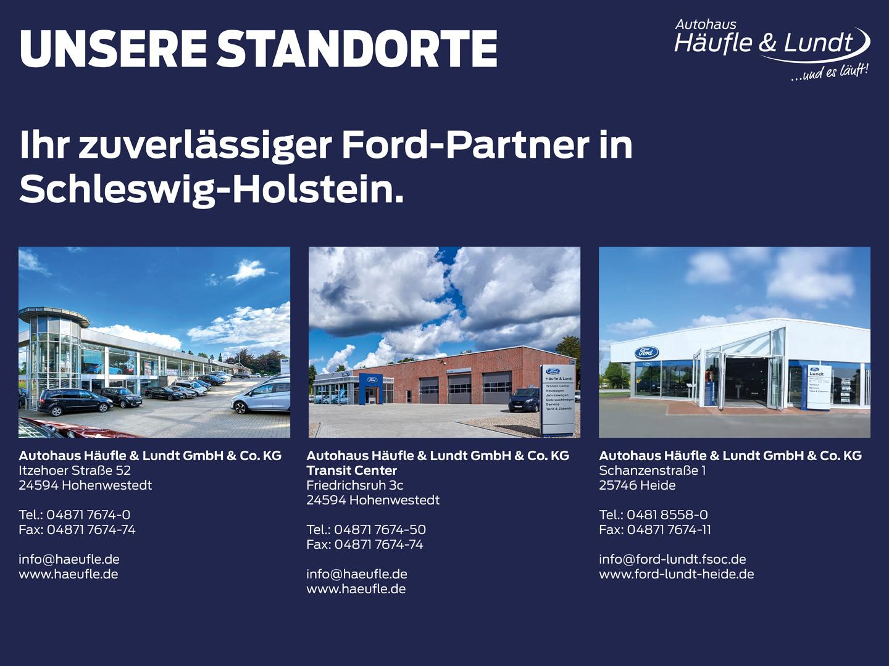
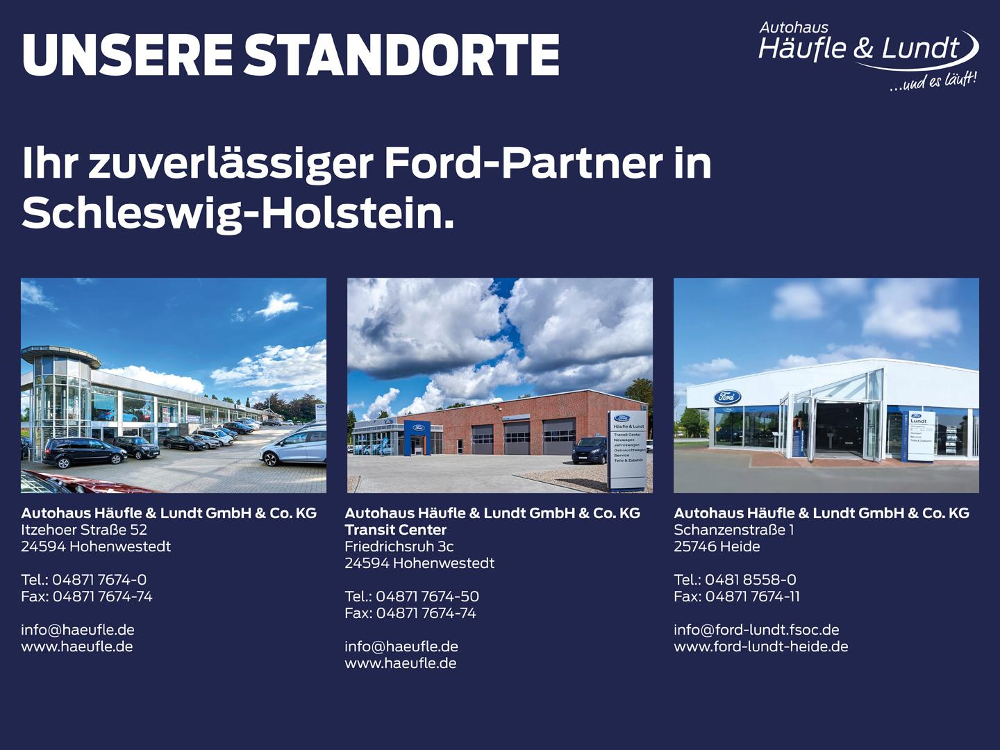

Ford Explorer ST-Line Plug-in-Hybrid 4x4 7-Sitzer
45980 PLN
Hohenwestedt
41.000 km
Ausstattung:
- Getriebe: Automatik
- Technik: Allrad, Start-Stop-Automatik, Schaltwippen, Digitales Kombiinstrument
- Assistenten: Totwinkelassistent, Verkehrszeichenerkennung, Parklenkassistent, Regensensor, Fernlichtassistent, Lichtsensor, Notbremsassistent, Berganfahrassistent, Bergabfahrassistent, Spurhalteassistent, Abstands-/Kollisionswarner, Abstandsregeltempomat
- Komfort: Klimaanlage, Klimaautomatik, Servolenkung, Zentralverriegelung, Elektr. Fensterheber, Lederausstattung, Sitzheizung, Elektr. Außenspiegel, Tempomat, Park Distance Control, Multifunktionslenkrad, Keyless Go, Elektr. Sitze, Autom. abblend. Innenspiegel, Mittelarmlehne, Innenraumfilter, Einstellbare Lenksäule, Park Distance Control vo.&hi., Elektr. Heckklappe, Beheizbare Frontscheibe, Klimasitze, Mehrzonenklimaautomatik, Keyless Entry, Memory Sitze, Lordosenstütze, Lederlenkrad, Sitzheizung hinten, Geschwindigkeitsbegrenzer, Klimaautomatik-2-Zonen, Funkfernbedienung
- Sicht: Nebelscheinwerfer, Scheinwerferregulierung, Beheizbare Außenspiegel, LED-Hauptscheinwerfer, LED-Rückleuchten, Rückfahrkamera, LED-Tagfahrlicht, Tagfahrlicht, Privacyverglasung
- Sicherheit: ABS, Airbag, Beifahrerairbag, Wegfahrsperre, Seitenairbags, Alarmanlage, ESP, Antriebsschlupfregelung, Reifendruckkontrolle, Traktionskontrolle, Knieairbag, ISOFIX Kindersitzbefestigung, Notrufsystem, Notrad
- Entertainment: Navigationssystem, Soundsystem, Radio, Telefonvorbereitung, USB-Anschluss, MP3, Bang und Olufsen, Bluetooth, Freisprecheinrichtung, Apple CarPlay, Android Auto, Sprachsteuerung, DAB, WLAN, Touchscreen, Induktionsladen
- Qualität: Garantie, Scheckheftgepflegt, HU/AU neu, Nichtraucherfahrzeug, Inspektion neu
- Sonstiges: Schiebedach, Alufelgen, Dachreling, Gepäckraumabdeckung, Panoramadach, Elektr. Panoramadach, Sportfahrwerk, Elektrische Parkbremse, Lenkradheizung, Spoiler
... Änderungen, Zwischenverkauf und Irrtümer vorbehalten.
quality by dotzilla

 
